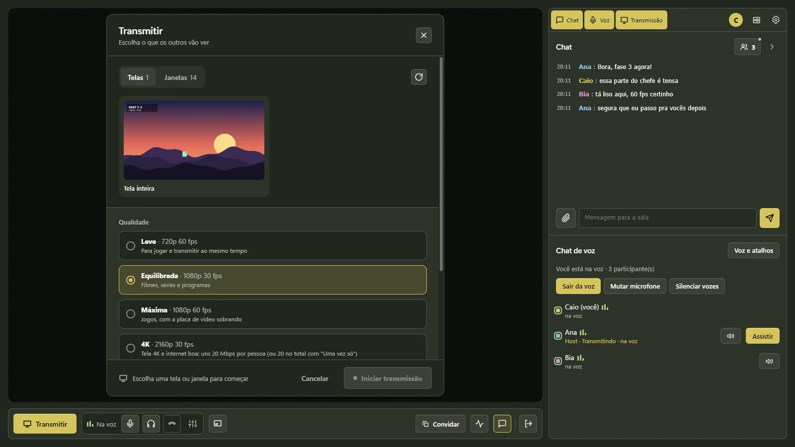
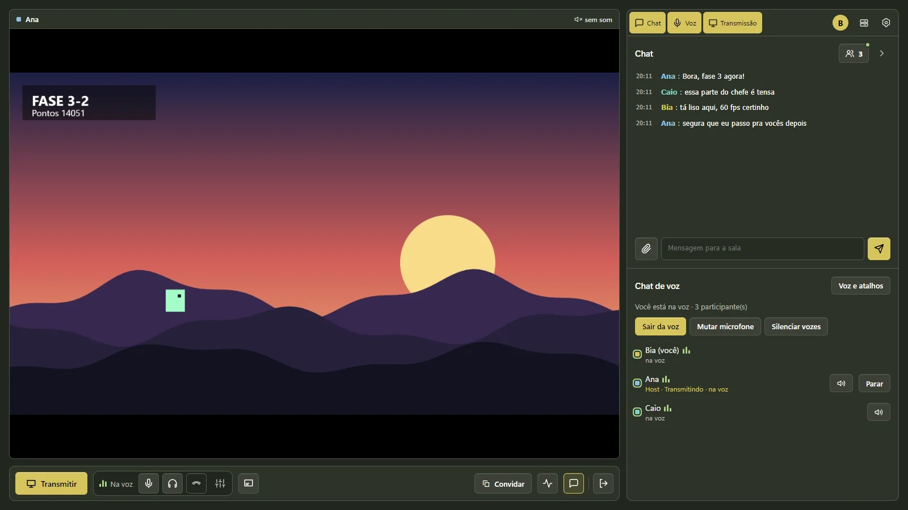
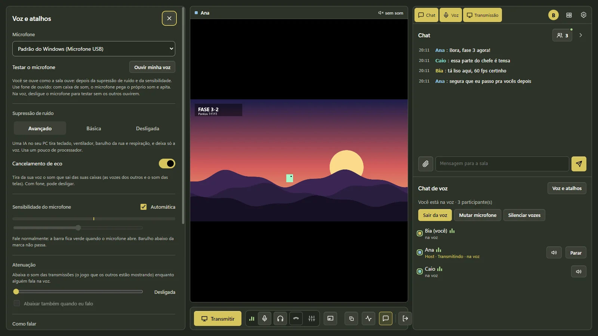
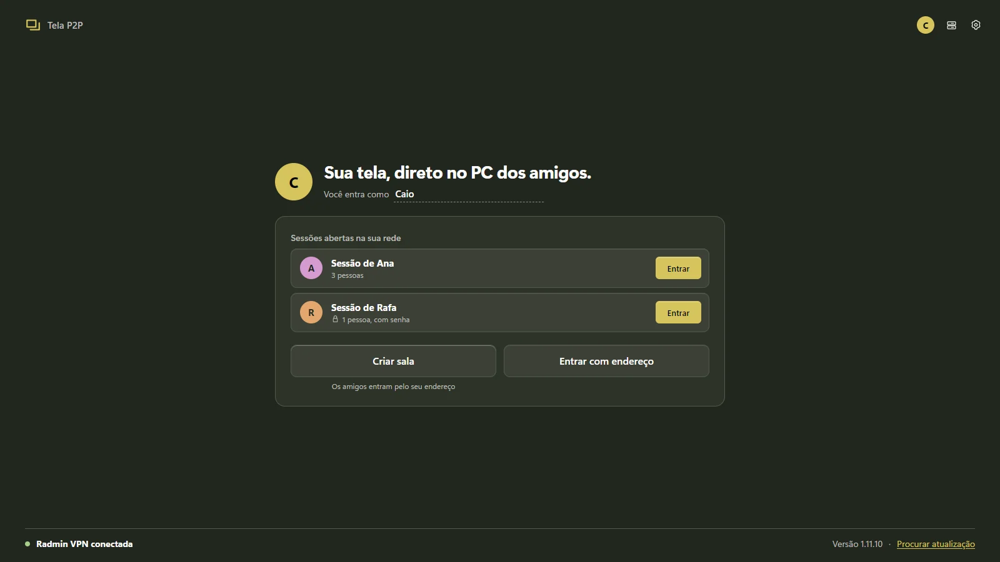

Transmissão de tela
Até 4K a 30 fps ou 1080p a 60 fps. De graça.
Escolha a tela inteira ou só a janela do jogo, com o som do PC junto. Troque o que está transmitindo no meio da partida, sem ninguém cair.

Transmita o jogo em até 4K, converse por voz com supressão de ruído por IA e mande mensagem sem sair da partida. Tudo de PC para PC: nada passa por servidor de empresa nenhuma.
Também para Linux (AppImage) · todas as versões · o app se atualiza sozinho pela sala

Recursos
Tudo o que um grupo de amigos usa numa call, pensado para não pesar no jogo de quem transmite.
Escolha a tela inteira ou só a janela do jogo, com o som do PC junto. Troque o que está transmitindo no meio da partida, sem ninguém cair.

Com NVENC, o custo de transmitir não cresce com o número de pessoas assistindo. O seu fps fica no jogo.
Supressão de ruído por IA rodando no seu PC, cancelamento de eco, apertar para falar (até com o botão do mouse) e volume de cada pessoa até 200%.
Deixe a tela do amigo num canto, por cima do jogo, e responda o chat com Ctrl+Enter. O teclado volta para o jogo quando você manda a mensagem.

Sem conta e sem documento. Fotos, vídeos, PDFs e arquivos do Office vão pelo chat sem localização, autor nem pasta do PC.
Se quem criou a sala sair, outra pessoa vira host sozinha e as telas continuam. Conexão caiu? Tela e voz voltam sozinhas.
As sessões abertas na sua rede aparecem na tela inicial. Um clique e você está dentro, com foto de perfil e tudo.
Como funciona
Um executável só, sem instalar nada além dele. As atualizações chegam assinadas, até pela própria sala.
Pela Radmin VPN, pela rede local ou pela VPN própria do grupo. A sessão do amigo aparece na tela inicial.
Clique em Transmitir, escolha a qualidade e pronto. Quem quiser assistir clica em Assistir ao lado do seu nome.

Comparação
| Tela P2P | Discord (grátis) | TeamSpeak 6 | |
|---|---|---|---|
| Transmissão de tela | até 4K 30 / 1080p 60 | 720p 30 (mais só com Nitro) | até 4K (em beta) |
| Conta | não precisa | obrigatória | opcional |
| Verificação de idade | não | em implantação desde set/2026 | não |
| Onde passam seus dados | direto entre os PCs | servidores da empresa | servidor da comunidade |
| Codifica uma vez para todos | sim (NVENC) | — | — |
| Limpa metadados dos arquivos | sim | não | não |
| Celular | ainda não | sim | sim |
Situação em setembro de 2026, segundo as páginas oficiais e a imprensa. O Tela P2P tem versão para Windows e Linux; Mac ainda não.
Na rede local (mesma casa ou mesmo Wi-Fi), não. Para amigos em outras casas, hoje você usa a Radmin VPN ou a VPN própria do grupo (Razze, com WireGuard). Entrar pela internet só com um convite, sem VPN, está no plano.
O vídeo e a voz vão criptografados direto entre os PCs, e as atualizações só são instaladas se a assinatura bater. Não existe conta, então não há senha nem documento seu guardado em lugar nenhum.
Com uma placa NVIDIA, o modo "uma vez só" codifica na placa de vídeo e manda o mesmo vídeo para todo mundo. As telas que você não está vendo param de baixar vídeo sozinhas.
Assistir em 1080p usa uns 5 a 7 Mbps. Para transmitir, conte isso por pessoa assistindo no modo normal, ou uma vez só no modo "uma vez só".
Linux sim: baixe o AppImage, dê permissão de execução (chmod +x Tela-P2P.AppImage) e abra. Mac e celular ainda não; assistir pelo navegador do celular está no plano.
Baixe o Tela P2P, crie uma sala e mande o endereço. Em um minuto vocês estão assistindo juntos.
Baixar para Windows